hello-world.txt
✕
Howdy, I'm Lola 👋🤠 I'm a design lead with 10 years of product design experience, working on everything from marketing websites to geospatial AR tools.
Most recently I was the design lead on the multiplayer team at Unity where I helped unify design work across three teams and designed high-impact game development tools. I also created a resilient design team that was able to thrive in a demanding, fast-paced environment.
Outside of Unity, I've worked on a variety of creative projects like a web-based text adventure game and a VR art experience. I also write a newsletter about the American West and am currently participating in Pixelles' Game Writing Program where I'm developing the narrative design for a small RPG.
🚨 I'm currently looking for a new role where I can use my design and management experience to help build happy, healthy teams and solve meaningful design problems. Think we could be a good fit? Let's talk! 🚨
Thank you~ 🪩
me.jpg
✕
fantom.txt
✕
Fantom is a sci-fi text adventure game I wrote and created using Twine. It was my first attempt at making a game and I learned a lot -- namely, how hard it is to make a game! It takes about 10 minutes to play and I highly recommend listening to Art of Noise's "Moments in Love" while you play.
tenebra.txt
✕
Tenebra is a Google Cardboard experience I created as part of Gray Area's incubator program. I did all the design, asset creation, and coding myself, with guidance from the mentors in the program. At the end of the program I demoed my project to the public at the incubator showcase.
The work explores themes of girlhood, magic, how computers used to feel, and getting lost in your own world. Throughout the process I ran user research sessions and learned about 3D modeling and how to use Unity.

case-study-1.txt
✕
Unifying multiplayer game development workflows
Problem
Our multiplayer team at Unity faced two major issues. One, there was another team in the company also working on multiplayer tools but with a different tech stack, which led to conflicting versions of various workflows. And two, our team was only working on the in-editor tools; a third team was working on the external tools (voice chat, tracking gameplay metrics, etc), and these two teams did not collaborate, leading to a disconnect between the tools.
Goal
Design one set of in-editor tools and a seamless transition to the external tools.
Responsibilities
I needed to collaborate with stakeholders from design, engineering, and product to make sure everyone was in alignment about what the multiplayer development experience should be. I had to help identify the various design pain points and create new interfaces to solve these issues. I also had to mentor a junior designer so she could tackle various UI changes herself with confidence. Finally, I had to outline a roadmap for the engineering team to make sure we prioritized which changes happened first
Outcome
We were able to unify our tools: each workflow only had one interface instead of two, and all the interfaces shared the same visual language to create stronger cohesion throughout the multiplayer game development process. This greatly improved the multiplayer experience, and I was successful in creating an environment of collaboration and trust between design, engineering, and product.
Team
Myself, 2 other design leads from the other teams, 2 designers, 5 engineering leads, 3 PMs
✻
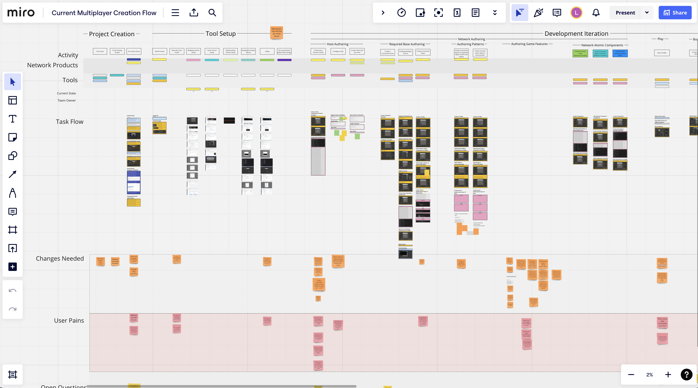Mapping existing in-editor workflows
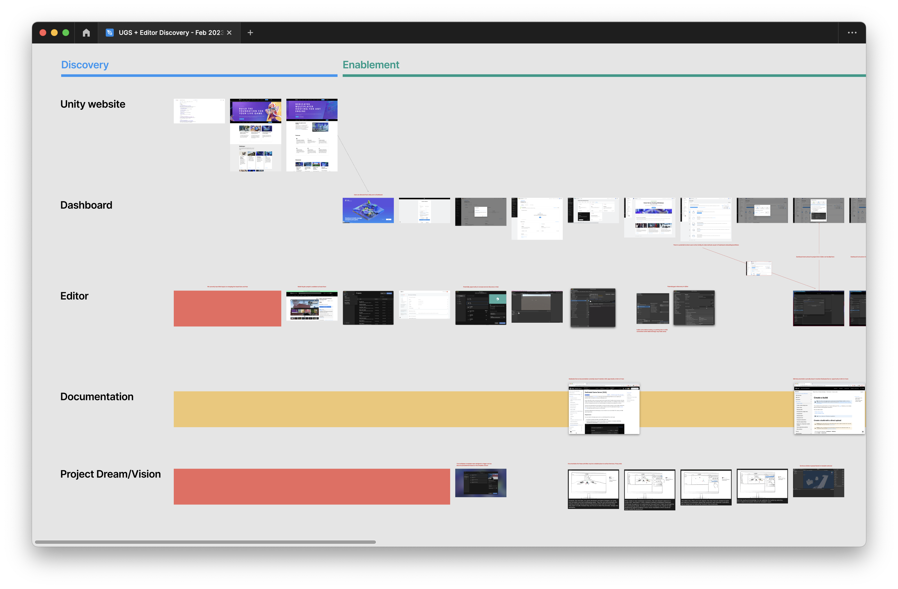Identifying gaps between in-editor and external tools
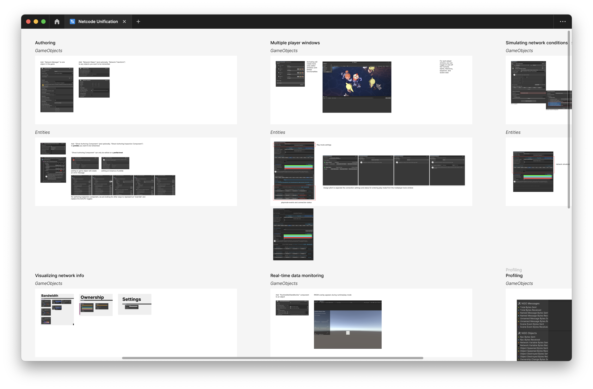Cataloguing duplicate in-editor tools
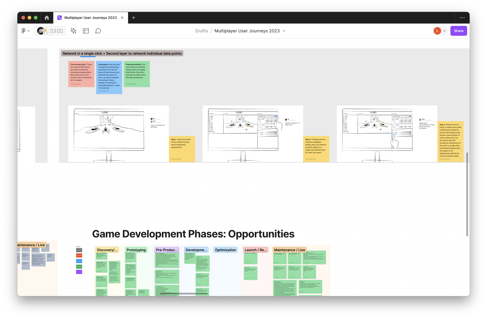Identifying opportunities for design changes
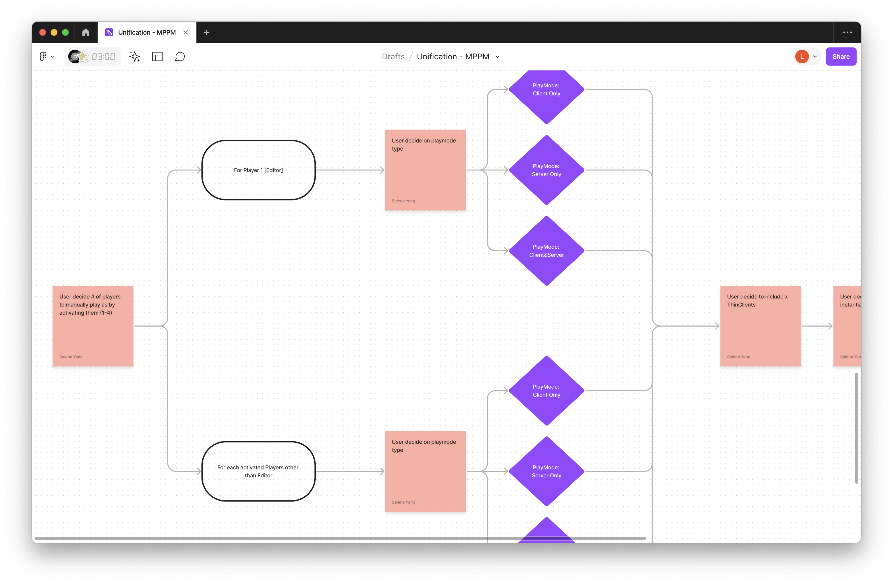Mapping new workflows
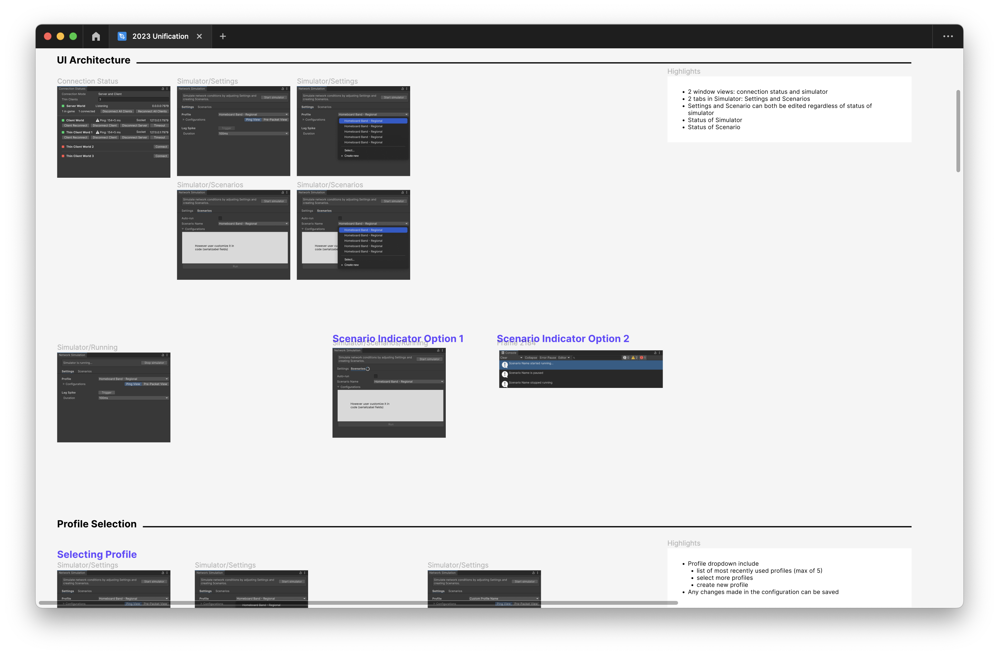Designing new UI
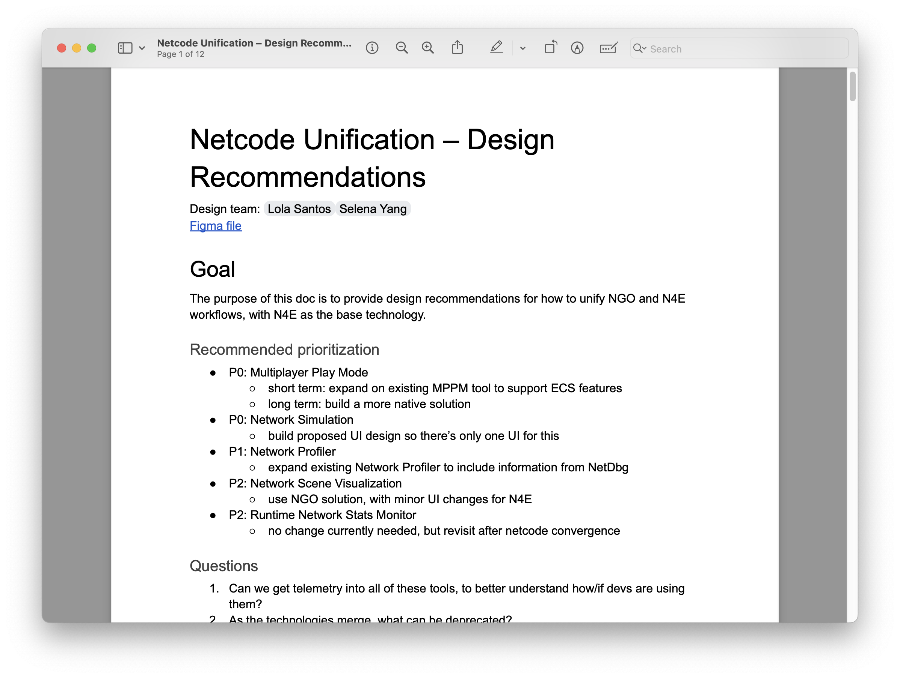Proposing design changes to get engineering and product sign-off
case-study-2.txt
✕
Designing high-impact multiplayer game development tools
Problem
Making multiplayer games is really hard. Most game engines don’t offer full multiplayer development support so dev teams build custom tools that require niche engineering knowledge to make and use. The barrier of entry is higher than for single-player games, but multiplayer games are becoming increasingly popular: 100% of the top 20 grossing games on Steam in 2021 were multiplayer! And since the majority of games on the market are made with Unity, there was an enormous risk of losing customers if we couldn’t support their evolving needs.
Goal
Create a suite of in-editor tools allowing users, technical or otherwise, to prototype, test, and launch their multiplayer games with confidence.
Responsibilities
I designed several tools from start to finish, either alone or later working with multiple other designers. I worked with PMs to conduct user research and prioritize user needs. I collaborated with multiple engineering teams to understand the technical limitations, and included them in the design process to create a quick feedback loop between designing, prototyping, and testing. When a junior designer joined the team, I mentored her and give her the resources to tackle some of the work on her own.
Outcome
We launched several tools, like the Multiplayer Play Mode and Network Simulator, that made immediate improvements to devs’ workflows.
Team
Myself, 1-3 other designers depending on the project, 2 engineering teams, 2 PMs
✻
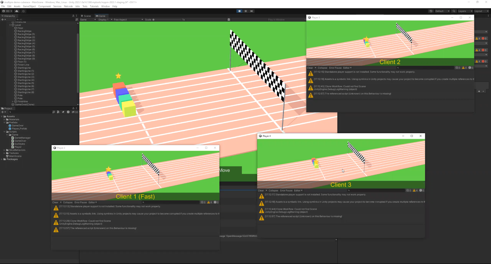Multiplayer Play Mode (MPPM) allows devs to emulate up to 4 players simultaneously. This was the #1 most requested feature, since devs always had to create custom solutions for this beforehand and it makes prototyping and testing significantly faster.
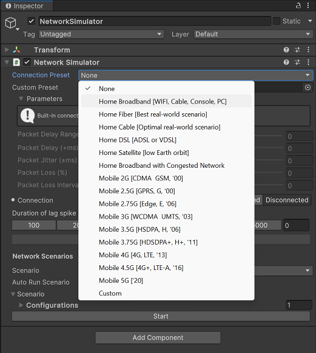Network Simulator (NetSim) simulates network conditions: how will the game run on certain devices or certain WiFi conditions? This allows devs to be more confident about how their games will work in realworld conditions.
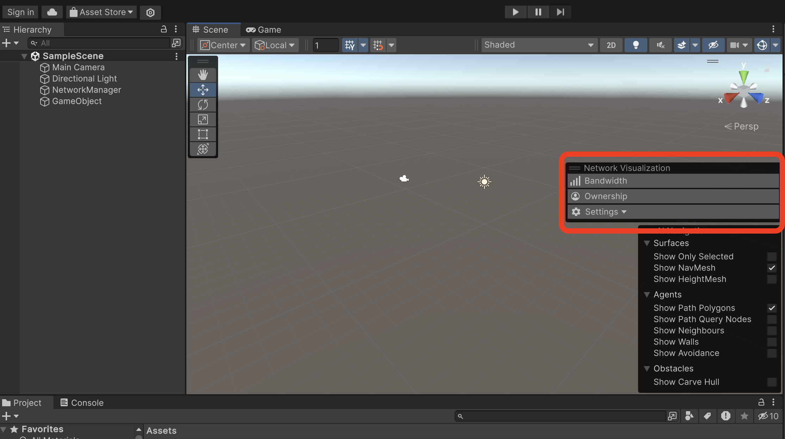Network Scene Visualizer (NetSceneVis) allows devs to quickly scan their scenes for network issues or bottlenecks.
case-study-3.txt
✕
Creating a resilient design team in a fast-paced environment
Problem
The multiplayer design team had a demanding workload and rarely enough resources. We had to build a suite of tools and shape the entire multiplayer game development experience from scratch, with a limited team and no budget to increase it. There was a high risk of not meeting business goals and also losing the team to burnout or low morale, especially after several cycles of layoffs.
Goal
Create a culture of strong communication and facilitating empathy between teams that faced similar challenges. Offer mentorship to a junior designer and consistently budget time for the team to work on professional development goals.
Responsibilities
I provided mentorship to a junior designer, ensuring she had the resources and motivation necessary to exceed team goals in a psychologically safe environment. I had to work very closely with engineering and product to figure out where we could compromise; if we couldn’t work on every project at once, then we needed clear expectations about what would happen when. I had to keep morale up during layoffs and create a sense of stability during otherwise uncertain moments.
Outcome
I’m happy to say I created a design team that can weather any storm ☺︎ I also got my junior designer promoted during a year of very limited promotions and raises, and formed strong working relationships with the engineering leads. We were able to collaborate on multiple demanding projects with aggressive deadlines while maintaining patience and empathy for each other.
Team
Myself, 1 junior designer
✻

I created a 1-page summary of how the design team works and how engineers can collaborate with us.
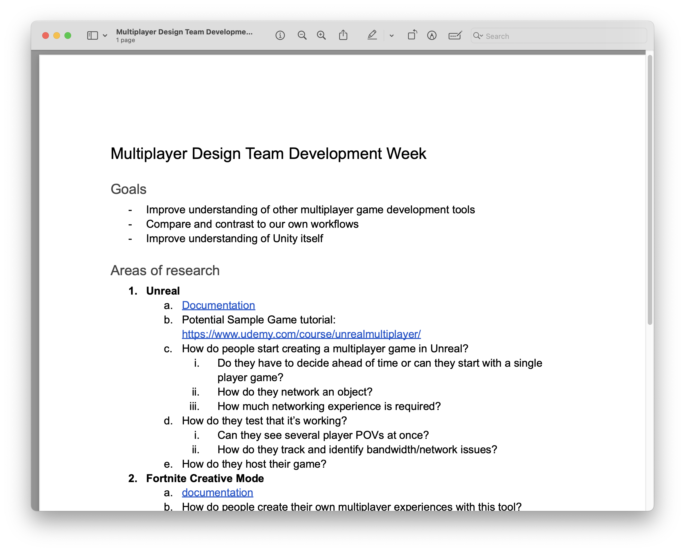I made sure we had quarterly development weeks where we could work on professional development or design maintenance.
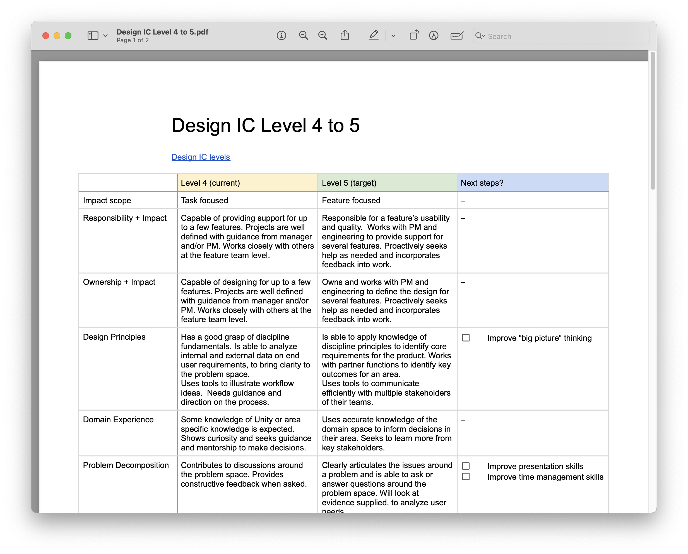When trying to promote a junior designer, I created a clear plan for her and had weekly check-ins to monitor her progress. Ultimately, she was able to receive a promotion during a year when promotions and raises were limited.